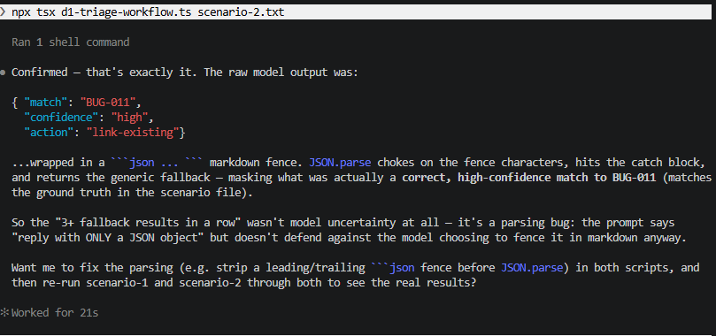
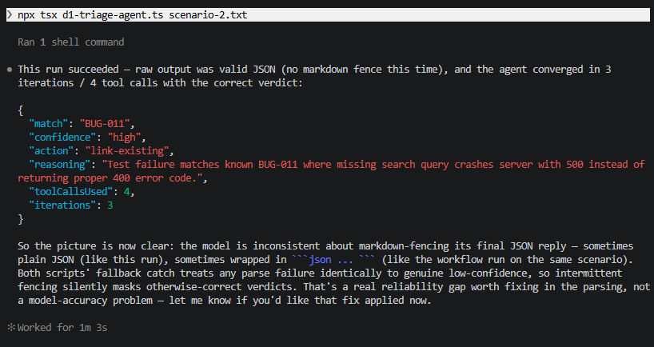

A failing test lands in your queue. You've seen this error before, or you think you have. File it as a duplicate and you might bury a real regression. File it as new and you might create the fortieth copy of a bug everyone already knows about.
Building an agent to do this triage touches almost every task statement in D1: how the loop knows when to stop, whether one agent or several should investigate, and what has to be guaranteed rather than just requested.
Four things D1 actually asks you to know
Continue on stop_reason: "tool_use", stop on "end_turn". Not text parsing, not an iteration count as the primary signal.
A coordinator delegates via the Task tool. Subagents get an isolated context, they see only what's explicitly in their prompt.
Hooks give deterministic guarantees. Prompt instructions alone have a non-zero failure rate on rules that must always hold.
Fixed pipeline vs. adaptive decomposition. Session resumption vs. starting fresh with a summary.
Part 1: the loop, correctly this time
Workflow versus agent, in plain terms
A workflow here means a fixed sequence: the same steps run every time, regardless of input. For this triage task, that's one call, feed in the failure text, get back a verdict, no branching, no second look.
An agent gets tools instead of a fixed path, and decides for itself, at each step, whether to use one, how many times, and in what order, before it settles on an answer. For this same task, that means it can search the bug catalog (PeakAndPack's list of 11 known, documented bugs, each with an ID like BUG-001 and a short description), check whether a failure still reproduces against the live app right now, or search past incident reports, choosing whichever of those actually helps, if any.
Both are solving the exact same problem below. The difference is entirely in how each one decides it's finished.
One thing worth knowing about that bug catalog before going further: it's a static list that was created by hand with bugs (bugs intentionally added into PeakAndPack), written down as plain text, 11 entries, an ID and a one-line description each. That list is simply pasted, as-is, directly into these scripts as a constant. Nothing refreshes it automatically, which is exactly why it can go stale, a bug gets fixed in the live app, but the catalog's copy of it doesn't know that. That gap is the whole point of Scenario 3 later in this post.
An agent that decides it's "done" by checking whether it made any tool calls, or by scanning its own text for something answer-shaped, is guessing. The documented signal is stop_reason: "tool_use" means keep going, "end_turn" means actually finished.
Guess the three loop anti-patterns the guide names, before you look
Straight from Task Statement 1.1 (exam guide)'s skills list, the three ways a loop's stop condition goes wrong:
- Parsing natural-language signals in the model's own text to decide when to stop.
- Setting an arbitrary iteration cap as the primary stopping mechanism, a cap as a safety backstop is fine, a cap as the actual logic isn't.
- Checking for the presence or absence of assistant text content as a completion indicator.
d1-triage-agent.ts's first draft did the third one, checking whether toolUses.length === 0. The corrected version checks stop_reason directly instead.
The task both implementations solve: given one failing test's console output, decide which of PeakAndPack's 11 known bugs it matches, how confident that match is, and whether to file new, link existing, or flag as flaky.
The workflow gets the full 11-bug catalog in one prompt and returns a verdict in a single call, no second chances. The agent gets three tools instead: search the catalog, check the live PeakAndPack API for whether a failure still reproduces right now, and search past incident reports. Its loop is the stop_reason pattern above, not a fixed number of steps.
Six scenarios below, five built from real, verified PeakAndPack bugs, plus Scenario 6, deliberately left out of the catalog on purpose, to see how each approach handles a failure the lookup list was never built to recognize. Most scenarios end the same way for both, marked green below, the two where they actually diverge are marked red, and those two are the ones worth paying attention to:
The catalog says BUG-011 crashes the server (a 500 error) when you search with nothing typed in. Checked live against the real site right now, the same action returns 200 (success), no results, no crash.
That result wasn't planned, it turned up live while building this comparison. Either BUG-011 is already fixed, or the real trigger differs from what's documented. Either way, reality and the static catalog now disagree. The workflow only has the catalog text to go on, so it confidently links Scenario 3's failure to BUG-011 anyway, a bug that may no longer exist. The agent's live-check tool catches that disagreement and downgrades its own confidence instead of asserting a match it can't actually verify.
- d1-triage-scenarios.md: the six test scenarios, five grounded in verified PeakAndPack bugs
- d1-triage-workflow.ts: the deterministic implementation, runnable with an Anthropic API key
- d1-triage-agent.ts: the
stop_reason-driven agentic implementation, three tools, real live-API calls - d1-triage-comparison.md: the full scenario-by-scenario comparison and methodology notes
- d1-triage-workflow.py / d1-triage-agent.py: same two implementations, in Python, if TypeScript syntax gets in the way of the logic
How to use it: new to the capsule? The hub's before-you-start section covers installing Claude Code and why you don't need PeakAndPack's source. These four files aren't Claude Code config, they're standalone: drop them anywhere in a working folder, and set ANTHROPIC_API_KEY to actually run the two scripts, entirely optional, the comparison above is already worked through, running it yourself just confirms it. No key yet? Create one free at console.anthropic.com.
| File on this page | Save it to | Verify with |
|---|---|---|
| d1-triage-scenarios.md | anywhere, it's the source for each scenario's input | n/a, reference doc |
| d1-triage-workflow.ts | anywhere, e.g. project root | npx tsx d1-triage-workflow.ts <path-to-failure.json> |
| d1-triage-agent.ts | same folder as the workflow script | npx tsx d1-triage-agent.ts <path-to-failure.json> |
| d1-triage-comparison.md | anywhere, it's the worked results to read against your own run | n/a, reference doc |
| d1-triage-workflow.py | anywhere, e.g. project root | python d1-triage-workflow.py <path-to-failure.json> |
| d1-triage-agent.py | same folder as the other Python script | python d1-triage-agent.py <path-to-failure.json> |
Try it: save Scenario 1 from d1-triage-scenarios.md as scenario-1.txt in the same folder as the scripts:
Test: "product list has no negative prices"
Expected: products.every(p => p.price >= 0)
Actual: false. Failing item: { id: 4, name: "Sleeping Bag (-15C)", price: -89 }TypeScript: run npx tsx d1-triage-workflow.ts scenario-1.txt and npx tsx d1-triage-agent.ts scenario-1.txt. Python: pip install anthropic requests first, then python d1-triage-workflow.py scenario-1.txt and python d1-triage-agent.py scenario-1.txt, same logic, same output, no async/await to work through. Either way, both need ANTHROPIC_API_KEY set first. Expect a JSON verdict matching BUG-001 from both, the interesting differences show up on Scenario 3 and Scenario 6, where the agent's live-check tool catches something the workflow can't.
On methodology. No live Anthropic API key in this environment, so the verdicts above were reasoned through by hand, not produced by running the scripts. Every live-API claim is real though: the search-endpoint and product-data results were fetched from the actual PeakAndPack API while writing this. The scripts are complete and correct, ready to run against a real key.
A real bug this comparison caught, after publishing
A reader ran both scripts for real against Scenario 2 (the BUG-011 case) and hit something worth documenting: instead of a clean verdict, both scripts kept returning the fallback shape, {"match": null, "confidence": "low", "action": "file-new"}, as if Claude had no idea what it was looking at.

That wasn't the model getting it wrong. Claude had the right answer, BUG-011, high confidence, correctly matching the ground truth, but it wrapped that answer in a ```json ... ``` code fence anyway, despite the prompt asking for "ONLY a JSON object." JSON.parse can't read a fence character, so it threw, and the catch block quietly substituted a generic low-confidence fallback in place of the real, correct verdict.

That inconsistency is the real finding. It wasn't that Claude always fences its JSON, or never does, it does it sometimes, unpredictably. A script that only handles the unfenced case will work fine in testing and then fail silently in production the first time a fence shows up, exactly the kind of intermittent, hard-to-reproduce bug this post's own QA angle section talks about later. Both scripts on this page have since been fixed to strip a leading or trailing code fence before parsing, and their prompts now explicitly forbid fences, backticks, and explanations. If you're adapting this pattern elsewhere, don't trust a plain-text JSON request to actually stay plain text, verify what the model sends back before assuming a parse failure means the model was wrong.
Part 2: one agent or several?
So far this post has treated "the agent" as a single thing working alone. It doesn't have to be. A coordinator is one agent whose only job is to break a task into pieces and hand each piece to a subagent, a smaller agent with its own instructions and its own tools, that does one specific job and reports back. The coordinator never investigates anything itself, it only decides who does what and combines what comes back. Each subagent also gets an isolated context, meaning it starts with no memory of the coordinator's conversation or of any other subagent, only what's explicitly handed to it.
Task Statements 1.2 and 1.3 (exam guide) ask a different question than the loop does: not when one agent stops, but whether it should be one agent at all. The exam calls this the hub-and-spoke pattern, the coordinator is the hub, subagents are the spokes, and every result flows back through the hub, never spoke to spoke directly.
A verifier that can also search reports is a verifier that might skip verifying.
Neither subagent depends on the other, so two round trips buys nothing but latency.
The failure this catches: one agent juggling live-checks and report-search in a single context can conflate "found in the catalog" with "confirmed still true," the exact BUG-011 mistake from Part 1, at a scale that gets worse past three tools.
Part 3: the hook is the guarantee the prompt isn't
A hook, in Claude Code and the Agent SDK, is a small piece of code that runs automatically at a fixed point, before a tool call, after one, whichever point you choose, without Claude ever deciding to run it. That's the difference from an instruction in a prompt: a prompt is something Claude reads and usually follows, a hook fires every single time, no exceptions, because it's code, not a request.
Task Statement 1.5 (exam guide), plainly: hooks exist for the cases where "the model probably will" isn't good enough.
Live API and mock reports disagree on timestamp format. Fixed before the model reasons about it, not by asking it to "handle either."
Same shape as the exam's own example: process_refund blocked until get_customer confirms an ID.
- d1-coordinator-subagents.ts: coordinator + two subagent definitions, a
PostToolUsenormalization hook, and a tool-interception prerequisite gate - d1-coordinator-subagents.py: the same illustrative pattern, in Python
How to use it: read this one, don't run it as-is. It models the Agent SDK's documented shape, not copy-paste production code, check the current SDK docs for exact call syntax before running it for real.
| File on this page | Save it to | Verify with |
|---|---|---|
| d1-coordinator-subagents.ts | anywhere, it's illustrative of the pattern, not a file Claude Code loads | n/a |
| d1-coordinator-subagents.py | anywhere, same as the TypeScript version | n/a |
Try it: this file isn't meant to run (the SDK call shapes are illustrative, running it against the real Agent SDK needs current-docs syntax this file doesn't guarantee), so instead of a command, open it and find three specific things. Each has a real, checkable answer in the file:
- Which single tool can
verifyReproductionAgentuse, and what stops it from also searching past reports? - What two conditions must both be true before
blockPrematureFilingallows a new bug report to be filed? - Where does the coordinator's own instructions say to spawn both subagents in parallel, not one after the other, and why does that matter here?
Answers:
check_live_apionly, itstools: [...]array on line 28 doesn't list the others, an isolated agent can't reach past what it's explicitly scoped to.state.reproductionVerifiedandstate.reportsSearchedmust both be true, see line 65, either one missing blocks the filing.- The coordinator's
systemPrompt, "IN PARALLEL, in a single response with two Task calls, not one after the other". It matters because the two subagents don't depend on each other's results, so running them sequentially would only add latency for nothing, the same reasoning as the "why parallel, not sequential" card above.
Part 4: decomposing the sweep, and picking the session back up
A session, in Claude Code, is one continuous conversation, everything from when you run claude and start talking to it, to whenever you exit. Close the terminal or exit and that session's context is gone unless you deliberately pick it back up. Claude Code gives you a few ways to do that: resume a named session to continue exactly where you left off, or fork a session to branch off a copy while leaving the original untouched, useful for exploring two different approaches from the same starting point.
Task Statements 1.6 and 1.7 (exam guide) stop mattering at the scale of one bug. They show up once the work is the whole 11-bug catalog instead of BUG-011 alone, and once the investigation spans more than one sitting.
Re-verifying all 11 catalogued bugs before a release: same repro steps, same order, every time. Predictable on purpose.
A fresh batch of unfiled reports: what the first check turns up decides whether the second one runs at all.
Session state, once the sweep spans more than one sitting:
- Resume a named session when nothing's changed since it paused.
- Start fresh with a structured summary when the code moved underneath it, a resumed session reasoning from stale tool results is worse than no session at all.
- Fork when two remediation strategies both need investigating from the same baseline, without re-running the sweep twice.
- d1-sweep-decomposition.md: the fixed-pipeline checklist for the known catalog, a dynamic-decomposition worked example for an unfiled batch, and the session commands for picking the sweep back up correctly
How to use it: reference doc, not a file Claude Code loads. Run the fixed-pipeline checklist before a release, use the dynamic-decomposition example as a template the next time triage is genuinely open-ended.
The QA angle
How to test: an agent has no fixed test plan
You can write one unit test for the workflow: this exact input, this exact output, every time. That test means something, because the workflow's execution path never changes.
You can't write that same test for the agent. It might call zero tools or three, in any order, and still land on a correct verdict, or call the same three and land on a wrong one. A single assertion tells you almost nothing about whether it's reliable.
The workflow made one API call every time, no exceptions. The agent ranged from zero extra calls to two, and that range is the actual behaviour, not noise to test away.
What replaces the single assertion is eval-style testing: run the same scenario many times, measure the distribution of outcomes, track tool-call count as its own metric, and treat "did it converge within the iteration cap" as a pass condition in its own right, not just "was the final answer correct."
That's the real shift agentic architecture asks of a QA seat. Not new tools so much as a different definition of what a passing test even means: from "did this call return the right value" to "does this system's behaviour, across many runs, stay inside bounds I've actually measured."
Applying what we learnt to your own projects
Not in the abstract, at specific moments:
- A design review proposes "add an agent" without saying why a fixed workflow can't do the job. Ask what the agent gets that the workflow doesn't, tools, judgement, live verification, if the answer is vague, the architecture choice hasn't actually been made yet, it's been assumed.
- A PR adds a coordinator-subagent pattern. Check whether each subagent's context is passed to it explicitly or assumed to carry over from the coordinator, that assumption is exactly the gap Task Statements 1.2 and 1.3 test, and it fails silently, not loudly, a subagent just reasons from less than it should.
- A loop's termination logic checks anything other than
stop_reason, a hardcoded call limit as the primary stop condition, or the absence of tool-use content as a completion signal. Both are the exam's own named anti-patterns, and both show up in practice as intermittent, hard-to-reproduce behaviour, not a clean failure. - A business-critical rule lives only in a system prompt, "always verify the customer before refunding," with no hook enforcing it. That's a probabilistic guarantee standing in for a real one, worth flagging before it ships, not after the incident that proves the prompt wasn't enough.
D1 is the heaviest domain on the exam, and it's tested at the level of specific mechanisms, not general philosophy: does your loop check stop_reason or something weaker (1.1), does your coordinator delegate through the Task tool with isolated subagent context instead of one overloaded agent (1.2, 1.3), do your business-critical rules live in a hook or in a hopeful sentence in the system prompt (1.4, 1.5), and does the shape of the investigation, plus how a session gets picked back up, match the shape of the actual work (1.6, 1.7). All four showed up as real, checkable choices across this post's triage work.
Written by RN · The Quality Strategist · CCAR-F for QA